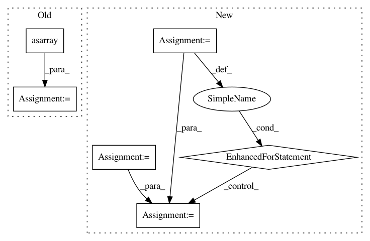

7d96731b9a50e5455a1e31f676508af42801b7ae,chainercv/links/model/deeplab/deeplab_v3_plus.py,DeepLabV3plus,predict,#DeepLabV3plus#Any#,129
Before Change
with chainer.using_config("train", False), \
chainer.function.no_backprop_mode():
x = chainer.Variable(self.xp.asarray(img[np.newaxis]))
x = self.__call__(x)
score = F.resize_images(x, crop)[0, :, :H, :W].array
score = chainer.backends.cuda.to_cpu(score)
label = np.argmax(score, axis=0).astype(np.int32)
labels.append(label)
return labels
After Change
with chainer.using_config("train", False), \
chainer.function.no_backprop_mode():
labels = []
score = 0
n_aug = len(self.scales) if self.flip else len(self.scales) * 2
for img in imgs:
for scale in self.scales:
score += self._get_proba(img, scale, False) / n_aug
if self.flip:
score += self._get_proba(img, scale, True) / n_aug
label = np.argmax(score, axis=0).astype(np.int32)
labels.append(label)
return labels
In pattern: SUPERPATTERN
Frequency: 3
Non-data size: 6
Instances
Project Name: chainer/chainercv
Commit Name: 7d96731b9a50e5455a1e31f676508af42801b7ae
Time: 2019-01-23
Author: 69guitar1015@gmail.com
File Name: chainercv/links/model/deeplab/deeplab_v3_plus.py
Class Name: DeepLabV3plus
Method Name: predict
Project Name: chainer/chainer
Commit Name: a33253b2e850ded23f4661555d65bd01082ecb55
Time: 2019-07-11
Author: kataoka@preferred.jp
File Name: chainer/functions/math/average.py
Class Name: Sum
Method Name: forward
Project Name: librosa/librosa
Commit Name: d3fd847ea63f5a4df3355ff5e43b3228cf43c444
Time: 2015-08-31
Author: brian.mcfee@nyu.edu
File Name: tests/test_core.py
Class Name:
Method Name: test_piptrack